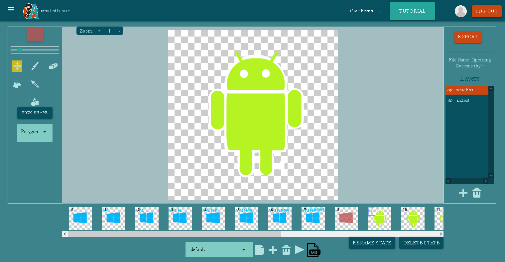
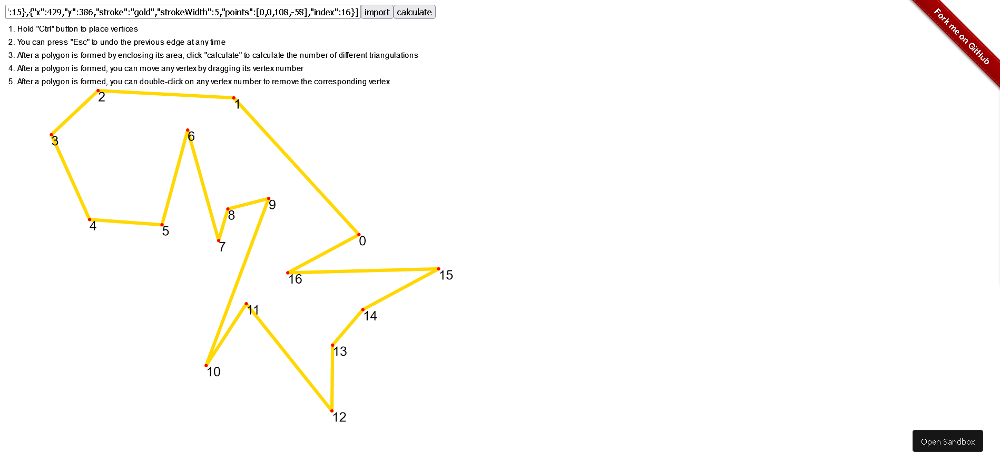
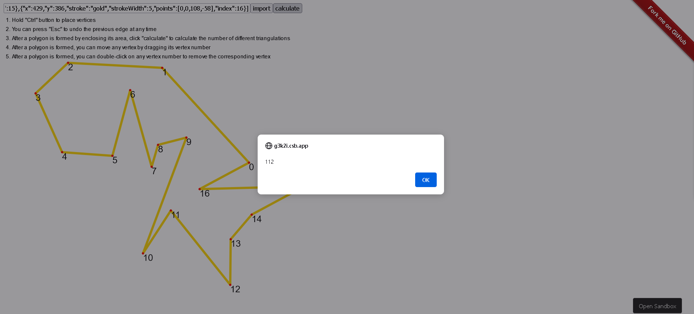
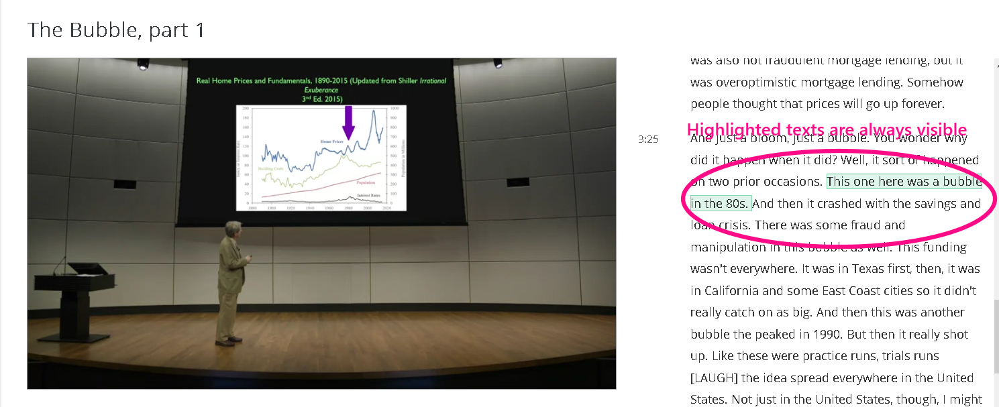

About Me
Short Bio
- I’m currently a graduate student at Cornell University studying Computer Science. I learned to program and build websites ever since I was in elementary school and eventually became obsessed with Computer Science.
- I have always maintained a broad interest among different fields including but are not limited to: Software Engineering, Computer Systems, Computer Security, Computer Networks, Artificial Intelligence. Likewise, I also have a side interest in popular trends such as Cryptocurrency, Quantum Computing, Finances, and Music.
- Acquiring knowledge has always been a luxury to me especially when there is so much to learn. I know I will never have enough time to fully understand everything. I tend to think of the universe when my mind is free of daily hassle. Ultimately, that is what I am curious about the most.
Skills
Programming languages
- Proficient: Python, JavaScript/ECMAScript
- Intermediate: C, C++, Go, C#, Java, MIPS
- Relevant: x86, PHP, Ocaml, MATLAB
Utility
- Experiences: Git/CVS, Bash, GitHub Workflow/Copilot, LaTeX, Regexp, Windows/Linux/Mobile(Jailbreak/Root)-related, MongoDB/MySQL/Firebase, VMware/VirtualBox, Fiddler/Wireshark, Drupal, Unreal Engine 4, React/Express/Node.js, OpenShift, OpenAI GPT3, Google Colab, other computer security/privacy-related applications
Research Experiences
- File Systems and Storage Lab Research Assistant
(Stony Brook University, NY, Jun 2021 - May 2022)- Supervised by Professor Erez Zadok
- Involved in the project Model-Checking Support for File System Development
- Implemented a workflow to automate distributed (remote) SPIN swarm verification
- Optimized the file system model checking project code-base (C/C++) using an extremely fast hash algorithm with options to select different hashing methods for traversing directory trees, and implemented the file/directory exclusion list feature
- Performed code-base bench-marking and file system regression testing
- Designed a test script that reveals FUSE (Filesystem in Userspace) backup/restore bugs and fixed them along with all existing memory errors
- Proposed and helped create a comprehensive project documentation
- AnimatedPoseur Research Project Developer
(Stony Brook University, NY, Dec 2020 - Jul 2021)Preview
- Supervised by Professor Richard McKenna
- Initially designed for the 2D Game Programming (CSE380) class
- Used MERN (MongoDB, Express, React, Node.js) stack with GraphQL to develop the website
- Enabled users to create animated sprites and share with other people on the internet
- Provided features such as canvas tools, states/frames/layers management, components multi-selections, image/animation manipulations, and operation transaction stacks
- Deployment process automation using GitHub Action workflow
Teaching Experiences
- Teaching Assistant, Stony Brook University, NY, Aug 2021 - Dec 2021
- Course Title: Applied Calculus IV: Differential Equations (AMS361)
- Instructor: Iordan Michev
- Teaching Assistant, Stony Brook University, NY, Jan 2020 - May 2020
- Course Title: Fundamentals of Software Development (CSE316)
- Instructor: Richard McKenna
Work Experiences
- Web Developer, Queens Library at Central, Queens, NY, Summer 2019
- Fulfilled users’ feedback by adding/optimizing/modifying web features (PHP/Javascript)
- Handled various versions of the Drupal Framework for backward compatibility of website codebase
- Fixed website critical errors via troubleshooting/debugging
- Provide customized modules that meet supervisor’s needs for feature integrations
Public Projects
(Some other personal projects are not made public but may be shown upon request)
- Simple Polygon Triangulation Counting Tool: GitHub and DemoPreview

- A web application tool that counts the number of triangulations of a simple polygon
- My Userscripts Collection: GitHub
- Coursera Transcript Auto-Scrolling: GitHubPreview

- Make Coursera transcript scrollbar always scroll to where the sentence is being said.
- Steam Market Sniper: GitHub
- A Steam market web bot that dynamically places/relists order to minimize order cost while maximizing order priority
- Leetcode Helper: GitHub
- Add enhancements to the Leetcode online code editor
- Coursera Transcript Auto-Scrolling: GitHub
- Sun Audio DTMF Generation and Detection: GitHub
- A C Program that can detect/generate Sun Audio DTMF files using only pointers with minimal header files